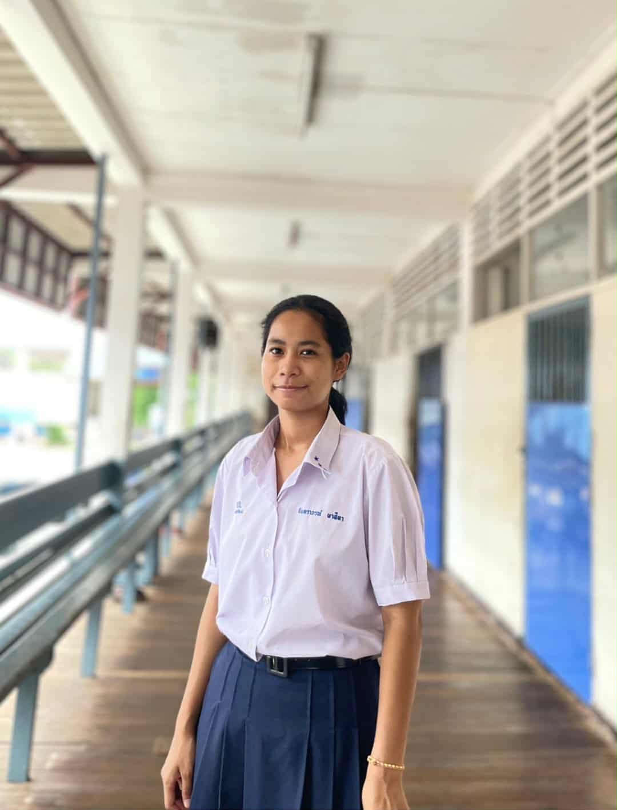
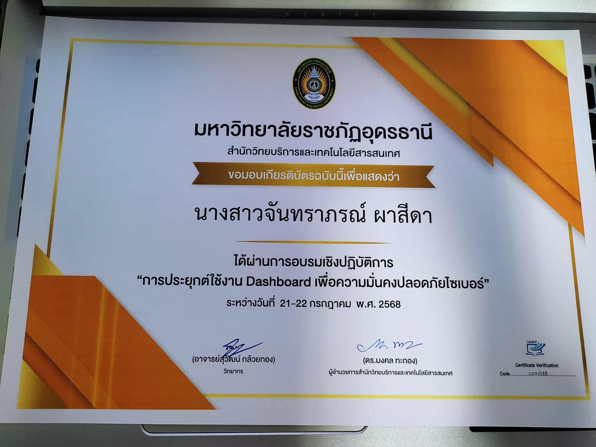
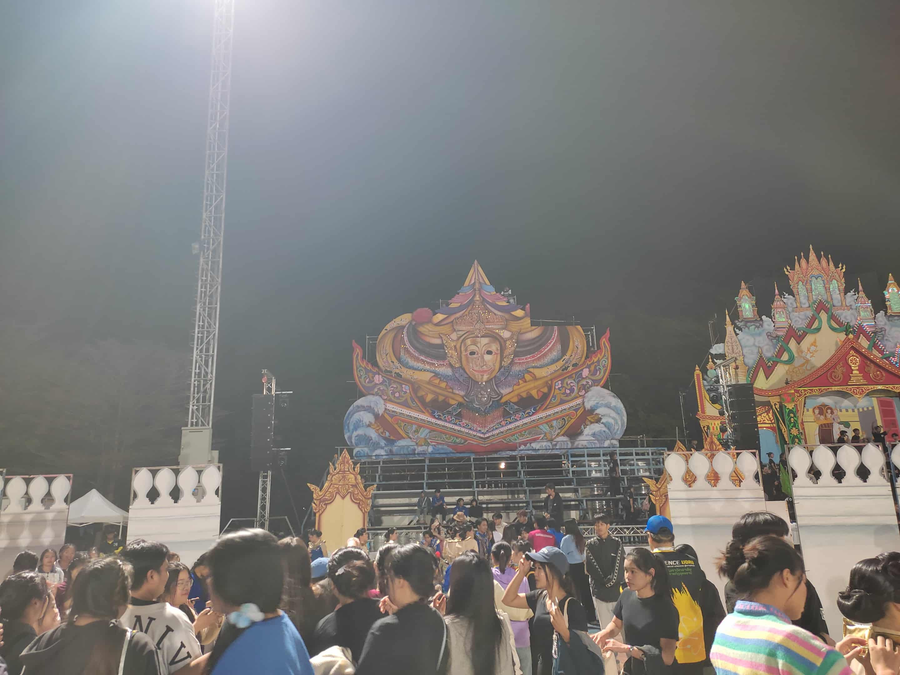
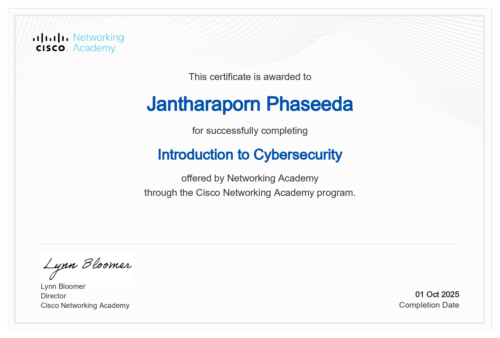

Profile
Portfolio & Introduction
1. แนะนำตัว (Introduction / Profile)
- รูปโปรไฟล์

- ชื่อ–นามสกุล : จันทราภรณ์ ผาสีดา (Jantharaporn Phaseeda)
- ชื่อเล่น : แพรว (Pawe)
- มหาวิทยาลัย : ราชภัฏอุดรธานี
- คณะ : วิทยาศาสตร์
- สาขา : เทคโนโลยีสารสนเทศ (information technology)
- ปีการศึกษา : ชั้นปีที่ 3
- ความสนใจเฉพาะทาง คือ AI, Web Dev, Cybersecurity
2. ทักษะ (Skills)
- Programming: Java, HTML/CSS, JavaScript, ภาษา C
- AI & Data: SQL, Gemini
- Tools: Github, Visual studio Code, Figma
- Soft Skills: การสื่อสาร, การทำงานเป็นทีม, การแก้ปัญหา, การตรงต่อเวลา
3. ผลงานที่ผ่านมา (Projects / Portfolio)
- เว็บไซต์ที่เคยพัฒนา : เว็บไซต์แนะนำเครื่องดนตรีไทย

- ออกแบบ Figma เกี่ยวกับ แอปขายรองเท้าแบรนด์: แอปขายรองเท้าแบรนด์

4. ประวัติการศึกษา (Education)
โรงเรียนมารีย์พิทักษ์เซกา 2560-2563
โรงเรียนมัธยมเซกา 2564-2566
ปัจจุบันศึกษาที่ : คณะวิทยาศาสตร์ สาขาเทคโนโลยีสารสนเทศ
มหาวิทยาลัยราชภัฏอุดรธานี
5. กิจกรรมและผลงานอื่น ๆ (Activities / Achievements)
- ผู้เข้าร่วมการอบรม “การประยุกต์การใช้งาน Dashboard เพื่อความมั่นคงปลอดภัย”

- เข้าร่วมแข่งขันแสตนเชียร์ กีฬาวังแดงเกมส์ ครั้งที่ 34

- certificate เรื่อง Cybersecurity

6. ติดต่อ (Contact)
📧 Email: 67040233119@udru.ac.th
🌐 GitHub: https://github.com/Jantharaporn
💼 Facebook: Facebook
🏠 ที่อยู่จังหวัด: 238 หมู่ 10 อ.เซกา จ.บึงกาฬ 38150
7. องค์ประกอบเสริม
เป้าหมายในอนาคต และ Career Interest
เป้าหมายในอนาคจอยากเป็น: Web Developer หรือ AI Engineer
ความสนใจ: สนใจในการเขียนโปรแกรมภาษา Java อยากเรียนรู้ให้เข้าใจมากยิ่งขึ้นเพื่อการทำงานในอนาคต